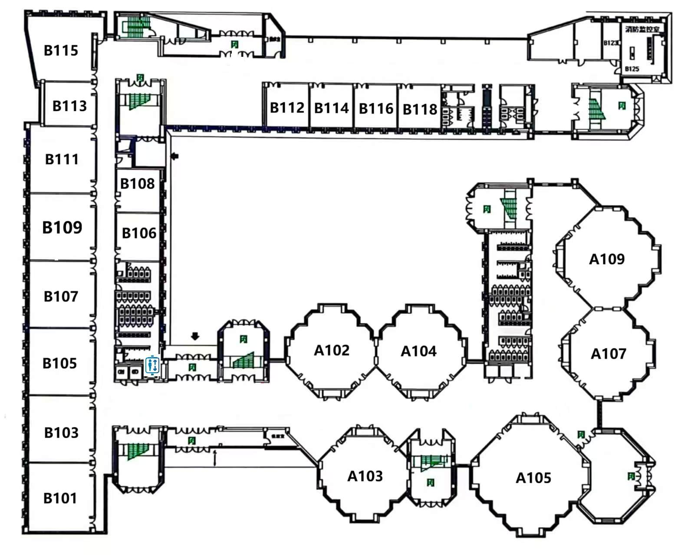

09:41
东北大学 · 浑南校区CAMPUS NAVIGATOR
© OpenStreetMap · 东北大学浑南校区
附近地点4 个校园地标
图书馆200米
学习空间 · 自习座位开放时间07:30 - 22:30
楼层 / 区域共 5 层
校园路线东北大学 · 浑南校区
起点演示位置
目的地
一号楼室内子地点
室内路线图2F教室 → 楼梯 → 1F出口人工校准
N
--方向未开启
↱
沿2F走廊前往楼梯到达楼梯后下到1F
----全程
正在规划 · 校园路线预计用时--
↑正在生成校园路线
校园内部实时导航 · 出楼确认后切换百度地图
我的收藏
常用校园地点，一触即达
最近到访RECENT
我的
东北大学林
林同学东北大学 · 浑南校区
12导航次数
0收藏地点
16校园地标
校准你所在的位置点击地图上你当前所在的位置
室内精确校准一号楼 1F / 2F · 点击实际房间选择
所在楼栋
所在楼层
一号楼 · 3F点击选择教室或区域

可左右滑动平面图 · 点击房间标签选择教室
⌖
已选位置一号楼 · 3F · 305教室
修正当前位置传感器只能估算，请选择你实际到达的位置
位置来源：人工校准
室内连续精准定位需要蓝牙信标、Wi-Fi 指纹或 UWB 数据；当前使用路线节点校准降低累计误差。
室内定位增强GPS 较弱时使用传感器与手动校准
演示位置
定位精度--
已走步数0
室内 GPS 经常漂移。先校准地图位置，再开启方向与运动传感器，即可通过步态推算实时移动。
位置以人工校准或外部 UWB / 蓝牙 / Wi-Fi 定位为准；指南针只辅助转向，不会推算位置。
手机测试诊断定位、传感器与地图状态
安全环境--
GPS 支持--
GPS 精度--
运动传感器--
方向传感器--
地图拖动--
定位模式--
屏幕尺寸--
定位来源--
外部定位更新--
你已经到达室外了吗？
确认后将停止室内推算，并自动打开百度地图继续室外导航，直到目的地。
已到达目的地
你已到达图书馆